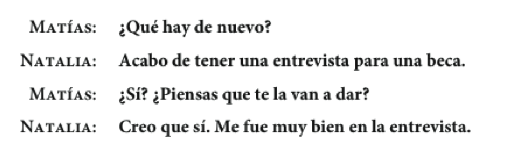

Español 1.5
Capítulo 9
Joseph V. Casillas
Middlebury College: Verano 2015
Simón dice que...
- En grupos de 3/4, jugad al "Simón dice" para practicar las partes del cuerpo.
- ¡OJO! Cuando el verbo decir implica un mandato hay que utilizar el subjuntivo.
- EJ.
- Simón dice que toquen (tocar) el estómago.
- Simón dice que salten (saltar).
- Etc.
CAPÍTULO 9 “¡Así es la vida!”
Plan

Vocabulario:
- Dar consejos
Gramática:
- El subjuntivo
- Selección de los mp3 para e-Portafolio
Las vicisitudes del estudiante

- ¿Qué vicisitudes tienes como estudiante en Middlebury?
- ¿Son diferentes fuera de Middlebury? ¿Cómo?
Algunas quejas comunes

- ¿Qué quejas tienes? Cuéntaselas a tu compañero
- ¿Qué consejos tienes para que se queje menos?
Para dar consejos


El subjuntivo:
- Cómo influir sobre los demás

Para formar el subjuntivo:
| El presente del subjuntivo | -ar | -er | -ir |
|---|---|---|---|
| descansar | hacer | salir | |
| (yo descansø) | (yo hagø) | (yo salgø) | |
| que yo | descanse | haga | salga |
| que tú | descanses | hagas | salgas |
| que el/ella/Ud. | descanse | haga | salga |
| que nosotros | descansemos | hagamos | salgamos |
| que vosotros | descanséis | hagáis | salgáis |
| que ellos/ellas/Uds. | descansen | hagan | salgan |
Las expresiones de influencia

Los verbos de comunicación
- aconsejar
- recomendar
- pedir
- sugerir
- prohibir
- Inventad una oración usando cada uno de los verbos de comunicación
- 9-7, p. 301
Los cambios ortográficos en el presente del subjuntivo

Los verbos irregulares en el presente del subjuntivo
| ir | ser | estar | saber | dar | |
|---|---|---|---|---|---|
| que yo | vaya | sea | esté | sepa | dé |
| que tú | vayas | seas | estés | sepas | des |
| que él/ella/Ud. | vaya | sea | esté | sepa | dé |
| que nosotros(as) | vayamos | seamos | estemos | sepamos | demos |
| que vosotros(as) | vayáis | seáis | estéis | sepáis | deis |
| que ellos/ellas/Uds. | vayan | sean | estén | sepan | den |
Ejerecicios
- 9-11, p. 304
Selección de los mp3 para e-Portafolio
Plan
- Los chistes
- Vocabulario
- Los grandes momentos
- Gramática
- El subjuntivo: las emociones
Ejercicios
- La salud: 9-4, p. 298
- Las recomendaciones: 9-13, p. 305
Los grandes momentos de la vida: Buenas noticias (43)

Otros sentimientos y buenas noticias (44)


Para reaccionar a las buenas noticias:

Malas noticias y otros sentimientos (45, 46)


Otras malas noticias y reacciones comunes a las malas noticias


Ejercicios
- 9-14, p. 307 (47)
Descanso (10 minutos)

El subjuntivo: Las expresiones de emoción

Las expresiones de emoción
esperar
- Esperamos que tu hermana encuentre empleo pronto.
sentir
- Sentimos mucho que Uds. no puedan ir a la boda.
estar + adjetivo de emoción + de
- Ramona está muy orgullosa de que su hijo se gradúe.
Más expresiones de emoción
tener miedo de
- Tengo miedo de que mi novia ya no me quiera.
ojalá
- Ojalá (que) sean muy felices.
Es + adjetivo o sustantivo de emoción
- Es ridículo que Sara no piense asistir a la boda.
Los verbos como gustar en las expresiones de emoción
gustar
- No nos gusta que no se casen por la iglesia.
alegrar
- A mi padre le alegra que yo siga con mis estudios.
preocupar
- Me preocupa que mis padres se separen.
Los verbos como gustar en las expresiones de emoción
sorprender
- ¿Te sorprende que se comprometan?
molestar
- Les molesta que no haya una fiesta para celebrar la graduación.
enfadar
- Me enfada que no inviten a mi novio a la fiesta.
Ejercicios
- 9-19, p. 311
- 9-22, p. 312
Los verbos con cambios en la raíz en el presente del subjuntivo
| -ar | e > ie | o > ue |
|---|---|---|
| pensar | acostarse | |
| que yo | piense | me acueste |
| que tú | pienses | te acuestes |
| que Ud./él/ella | piense | se acueste |
| que nosotros(as) | pensemos | nos acostemos |
| que vosotros(as) | penséis | os acostéis |
| que Uds./ellos/ellas | piensen | se acuesten |
- e > ie: despertarse, empezar, pensar, merendar, recomendar
- o > ue: acostarse, almorzar, contar, encontrar, jugar (u > ue), probar
Los verbos con cambios en la raíz en el presente del subjuntivo
| -er | e > ie | o > ue |
|---|---|---|
| entender | volver | |
| que yo | entienda | vuelva |
| que tú | entiendas | vuelvas |
| que Ud./él/ella | entienda | vuelva |
| que nosotros(as) | entendamos | volvamos |
| que vosotros(as) | entendáis | volváis |
| que Uds./ellos/ellas | entiendan | vuelvan |
- e > ie: atender, entender, perder, querer
- o > ue: poder, volver
Los verbos con cambios en la raíz en el presente del subjuntivo
| -ir | e > ie/i | o > ue/u | e > i/i |
|---|---|---|---|
| sentir | dormir | servir | |
| que yo | sienta | duerma | sirva |
| que tú | sientas | duermas | sirvas |
| que Ud./él/ella | sienta | duerma | sirva |
| que nosotros(as) | sintamos | durmamos | sirvamos |
| que vosotros(as) | sintáis | durmáis | sirváis |
| que Uds./ellos/ellas | sientan | duerman | sirvan |
* ¡OJO! Los verbos -ir tienen cambios en la forma nosotros y vosotros.
- e > ie/i: divertirse, preferir, sentir, sentirse
- o > ue/u: dormir, morir
- o > i/i: pedir, repetir, seguir, servir, vestirse
Ejercicios
- 9-23, p. 314
- 9-26, p. 316
La semana pasada
Gramática
- Usos de 'se'
- 'se' impersonal
- 'se' pasivo
- Los mandatos formales
- El subjuntivo
- las sugerencias
- las emociones
Vocabulario
- Por La ciudad
- Las partes del cuerpo
- Dar consejos
Plan
- Instrucciones Examen Oral 3
- Vocabulario:
- cuéntame de tu vida
- Gramática:
- El indicativo y el subjuntivo
- Las evaluaciones
Mandatos informales...
- Conjuga el verbo en la 2a persona singular...
- comer > comes
- Quita la "s"
- comes >
come
- comes >
- ¡da! (dar, normalmente con complementos)
- ¡corre! (correr)
- ¡piensa! (pensar)
- ¡habla! (hablar)
Mandatos informales... irregulares
- Vin Disiel has ten weapons
- Ven di sal haz ten ve pon
- venir decir, salir, hacer, tener, ir, poner
- Tu compañero/a tiene malas notas, sale de marcha demasiado y no ayuda a recoger la casa. Poned orden dándole consejos (usad mandatos informales).
Cuéntame de tu vida...

- haber
- irle bien/mal
Para expresar grados de certeza o duda, el optimismo, el pesimismo


- 9-30, p. 318
Cuando damos opiniones, expresamos la certeza y la duda.

Las expresiones de certeza

- Se usa el indicativo con estas expresiones.
- Creo que me van a ofrecer el puesto. (el presente)
- Creo que le dieron el puesto. (el pasado)
- 9-33, p. 321
El subjuntivo con la duda y la negación
La duda:
- Dudo que ella esté embarazada.
La negación:
- No es verdad que ella esté embarazada.
Las expresiones de duda

- Se usa el subjuntivo con estas expresiones.
- No creo que me vayan a ofrecer el puesto.
Las expresiones de negación

- Se usa el subjuntivo con estas expresiones.
- No es posible que ella esté embarazada.
El subjuntivo vs. el indicativo
El indicativo - la certeza
- la afirmación
- El subjuntivo
- la duda
- la negación

Ejercicios
- 9-35, p. 323
- 9-36, p. 324
Examen 3
Evaluaciones
ÚLTIMO DÍA

- El Plan
- Subjuntivo
Repaso
- Formamos el subjuntivo en 3 pasos...
- Vaya a la forma "yo"
- Quite la "o"
- Cambie la vocal
hago > hag > haga
como > com > comamos
estudio > estudi > estudies
Las cláusulas
El subjuntivo suele aparecer en una cláusula subordinada
- Recomiendo que te vayas
- Es necesario que me cuentes la verdad
- Dudan que podamos lograrlo
Suele haber un cambio de sujeto entre la cláusula principal y la subordinada
- El profesor quiere que
ellos sepan la respuesta. - El profesor quiere saber la respuesta.
- El profesor quiere que
Repaso

Qué opinas?
La universidad debe conceder becas según la necesidad económica, sin tomar en cuenta otros factores (talento atlético o artístico, mérito académico, etc.)
Todos los estudiantes universitarios deben pasar parte de su carrera académica estudiando en el extranjero.
La univesidad debe obligar a sus estudiantes a participar en actividades de servicio comunitario para graduarse.
Una pasantía debe ser una parte integral de todas las carreras en la universidad.
Ejercicios
- 9-38, p. 325
Las cláusulas adjetivales

Las cláusulas adjetivales
- La cláusula subordinada describe al antecedente de la cláusula principal.
- Funciona como un adjetivo.
- Ronaldo es un hombre que vive intensamente
- Paco es un profesor que toca el piano
- Tengo un perro que ladra mucho
- ¿Conoces al profesor que enseña el subjuntivo?
Las cláusulas adjetivales
- Se usa el indicativo si la subordinada se refiere a algo/alguien específico o conocido por el hablante
- Tenemos una secretaria que habla francés y alemán
- Aquí hay dos anuncios para puestos que ofrecen buenos beneficios
- Tenéis una profesora que nunca sonríe
- Escribid 3 oraciones que contengan cláusulas adjetivales
Las cláusulas adjetivales
- Se usa el subjuntivo si la cláusula adjetival describe algo no existente o si se duda de su existencia
- Claudia debe casarse con un hombre que tenga menos obligaciones
- Necesitamos una secretaria que hable japonés
- Quiero encontrar un puesto que ofrezca oportunidades para viajar
- No hay nadie que trabaje tanto como Elisondo
- Escribid 3 oraciones que contengan cláusulas adjetivales en el subjuntivo
Ejercicios
- GS9-1, p. 355
- GS9-2, p. 355
- GS9-3, p. 356
El examen final
Tarea
- Traed preguntas para el repaso
- Clase a las 9